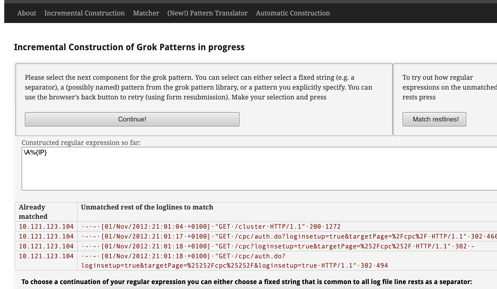

üìà Elastic Stack (ELK)
Table of contents
ELK is great for Centralized Logging, this enable us to not waste time trying to find where the issues are, we have all in one place. We also can
Kibana is the visualization of the ELK stack, you can visualize the data on real time.
Components
It has several open source add-ons, but the main ones are these:
- Beats:
- Light weight way of getting data into the ELK stack.
- Single purpose tools.
- Logstash:
- Transform data as it comes into structured data that will be stored.
- Very resource intensive
- Example: is like cutting carrots ü•ï as you get from the store and saving them to the fridge, instead of cutting them until you are about to cook
- Elasticsearch:
- The part of the stack that stores the data itself
- Usually deployed by a cluster, it has redundant copies so it can work if something fails
- Kibana:
- Web front end for the ELK stack
- Quick bird’s eye view across your infra
Logstash
Three block of code in config
- Input: get data in
- Output put data somewhere, usually elasticsearch
- Filter block: where data is transformed and relocated, where we can parse lines.
Example of config file.
input { stdin {} }
filter {
mutate {
add_field => { "greeting" => "Hello %{message}" }
}
}
output { stdout {} }
This will take input from STDIN and output it to STDOUT, anything we type would be returned in a structured format with a greeting field.
Logstash Plugins
It has more than 100 packages installed with logstash
/usr/share/logstash/bin/logstash-plugins list for listing them
-
Beats: Input plugin to work with
beatsinput { beats { port => 5044 } } -
File:
- Get input from a file, or multiple, you can use wildcards
input { file { path=> "/var/log/kern.log" } } -
elasticsearch
- this is an output plugin, you can point to multiple servers
output { elasticsearch { host => ["localhost:9200"] } }
Filters
-
Grok
- convert unstructured data to structured data
- based on regex, but it has many abstractions in case you want to use them
filter { grok { match => { "message" => "%{IP:client} %{WORD:method} %{URIPATHPARAM}:request...." } } } -
Mutate
- let you transform the data
filter { grok { match => { "message" => "%{TIMESTAMP:t} new users: %{GREEDYDATA:users}" # 2024-01-23 new users: jose,pedro,maria } } mutate { split => {"users" => ","} } }In this example grok will get the time stamp of the message and will get all the string after
new users:then we use mutate to split the users and have it stored as a list so when the data shows up in elasticsearch it looks like an array
GrokConstructor
grokconstructor.appspot.com Helper for creating grok filters.
You can see also some grok patterns too.
Basically you can paste the logs there build your filter from there

Beats
Why use beats? Logstash is overkill for a lot of things people use it for.
It uses JRuby (basically ruby that runs on the JVM), and by default it is configured to set aside 1GiB of memory for the JVM. That is too much to just send things to Elastic
Beats (written in Go) is way more ü™Ωlightweight, it has been design to be. Becuase of this can be run everywhere.
There are several beats
- Heartbeat (Uptime)
- Filebeat (Logs and text data)
- Metricbeat (Metrics)
- Packetbeat (Network data)
- Winlogbeat (Windows events logs)
- Auditbeat (audit logs and data)
- Functionbeat (serverless data)